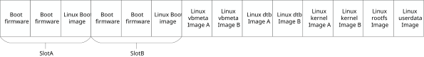
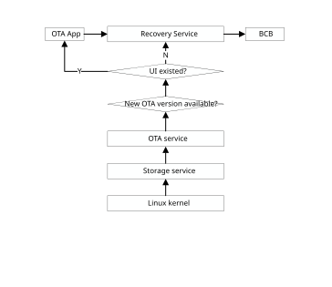
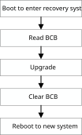
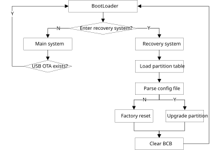
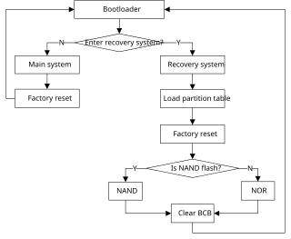
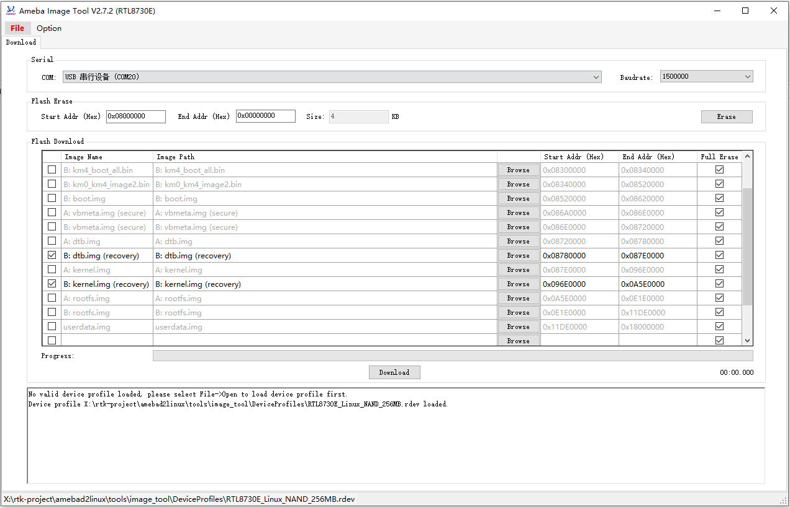

Overview
The over-the-air (OTA) programming provides a methodology for updating device firmware from various sources (e.g., via USB disk or TCP/IP network). Currently, the AmebaSmart provides a solution to implement OTA firmware upgrade from USB disk. Users can refer to the USB upgrade solution to easily implement their own OTA solutions.
Architecture
The OTA firmware upgrade in AmebaSmart is achieved by the following system modules:
Main System
The main system is the normal Linux system running user’s application. Normally it’s responsible for a new OTA package detected from a remote server or USB disk and downloading the OTA packages to a local storage. After detecting and verifying the OTA package, the main system will set the upgrade information in BCB (Bootloader Message Control Block) and reboot the system to notify the bootloader to boot up the system to a recovery system.
Recovery System
The recovery system is a minimum Linux system. It’s responsible for upgrading firmware according to specific OTA packages indicated by main system, it will upgrade OTA packages to the device. After upgrading, the recovery system will clear the information in BCB (Bootloader message Control Block) and reboot the system to notify bootloader to boot up to a new main system.
Bootloader and BCB
The BCB is the bootloader message control block, which is a structure shared by main system and recovery system, and a bridge between main system and recovery system. It can store the information whether to enter main system or not, and when upgrading OTA according to a specific path, OTA packages path will be set in BCB too. When system boots, bootloader will read the content of BCB, and determine to enter main system or recovery system.
The relationship among the three modules is shown in Figure 1-1.

Figure 1-1 Whole system relationship
Partition Layout
In AmebaSmart, the partition layout is listed in Figure 1-2
{kind=link}

Figure 1-2 Partition layout
All the images except rootfs and userdata image have A/B partitions.
“Linux dtb image B” is partition for recovery dtb image
“Linux kernel image B” is partition for recovery kernel image.
“Linux vbmeta image B” is partition for secure recovery vbmeta image
The images below can be updated via OTA. Currently only km4_boot_all, km0_km4_app and boot support A/B slot update.
Image name |
Description |
Support A/B update |
|---|---|---|
km4_boot_all |
Boot firmware |
√ |
km0_km4_app |
Wi-Fi/BT firmware |
√ |
boot |
Linux boot image |
√ |
vbmeta |
Linux vbmeta image |
x |
dtb |
Linux device tree blob image |
x |
kernel |
Linux kernel image |
x |
rootfs |
Linux rootfs image |
x |
userdata |
Linux user data image |
x |
Enable Slot B Boot
If user needs to enable boot from slot B. It needs to write bootloader slot B address into OTP which sets slot B address to 0x08300000. When boards boots up, executes the following command to OTP.
# efuse wraw 36C 2 0083
When both slot A and slot B are all flashed, system will check to determine which slot to boot from. The general principle is to compare version number of both slots to check which slot has a bigger version.
BCB and Bootloader
The main structure of BCB is structure bootloader_message.
//Bootloader Message (2KB)
struct bootloader_message {
char cmd[32];
char status[32];
char recovery[768];
char stage[32];
char reserved[1184];
};
In AmebaSmart, only “cmd” and “recovery” members are used.
The member “cmd” indicates whether the board enters recovery system or main system. If it is set to “boot-recovery”, the board will enter recovery system when boots. Otherwise, the board will enter main system. The member will be reset when exiting recovery system.
The member “recovery” stores the OTA path, the member will be set in main system when there is a new OTA package available.
The “status” is used to store the recovery status later, and reserved is planned to use for store recovery log.
OTA from USB solution, only “cmd” of BCB is used to indicate bootloader to enter main system or recovery system. Other members of BCB are not used.
Main System
The flow of main system is shown in Figure 1-3. An OTA solution from USB disk is provided for reference, this solution realizes OTA update from USB disk detection to GUI. GUI can receive OTA version callback when new OTA version is available in USB disk, GUI can determine whether to update this OTA version or not. If no GUI exist, main system will set BCB and reboot to enter recovery system automatically if new OTA version is detected in USB disk.

Figure 1-3 Main system OTA flow
The OTA flow of main system is shown in Figure 1-4. The OTA reference implementation in main system includes a recovery daemon:
Recovery daemon: It will detect whether any U-disk is connected with the board. If yes, it will try to read the OTA package from U-disck, if the OTA package exists, it will setup BCB and reboot board to notify bootloader to enter recovery system.

Figure 1-4 Main system OTA Architecture
The flow of USB OTA solution is shown in Figure 1-5. Storage service will detect USB hot plug, then notify OTA service. OTA service will check whether OTA package is available in specific directory. If OTA package is available, OTA service will notify OTA GUI if OTA GUI exists, and then set up BCB via recovery service APIs (OTA service will call recovery service APIs directly if no OTA GUI exists). When BCB is set successfully, recovery service will reboot the board to enter recovery system.
{kind=link}

Figure 1-5 USB OTA flow
Recovery System
The flow of recovery is shown in Figure 1-6. In USB OTA solution, recovery will get USB hot plug callback from kernel, detect OTA package in specific directory in USB disk, currently the OTA directory is “ota” folder under USB root directory (this will be introduced in later section). If “ota” folder exists and OTA package is detected under “ota” folder, recovery will update this OTA package first. If no USB is plugged to the board, recovery will get the OTA package path from BCB, then upgrade from the package path. After upgrade, recovery will clear BCB, and reboot to main system.
{kind=link}

Figure 1-6 Recovery flow
Recovery Install Package Flow
In USB OTA solution, when main system detects USB plugged, it will set up BCB and reboot to recovery system. The recovery system will load the partition table, get USB path from kernel, parse configure file (flash_image.cfg, configure file will be introduced in later section) and upgrade according to configure file from USB. The upgrade flow of recovery is listed in Figure 1-7.
{kind=link}

Figure 1-7 Package installation flow
Recovery Factory Reset
Recovery also provides factory reset function, factory reset is only to reset userdata partition.
When main system calls the corresponding API to factory reset, board will enter to recovery system, the flow of factory reset can refer to Figure 1-8.
In NAND flash, rootfs and userdata adopt UBI file system while in NOR flash rootfs uses squashfs, userdata uses jffs2, so wipe out userdata is deferent in NAND and NOR flash.
{kind=link}

Figure 1-8 Recovery factory reset
Recovery System A/B Update
In order to prevent system crashes, A/B slot update applies in boot firmware image, Wi-Fi/BT image and Linux boot image.
The information of A/B partitions is described in upper memory layout.
When board enters recovery system, if the three images above need to be upgraded, recovery system will get current slot info from Linux driver and then updates OTA packages to another slot.
Build Recovery System
For AmebaSmart, the recovery system kernel configuration is defined in <sdk>/sources/yocto/meta-realtek/meta-realtek-bsp/recipes-kernel/linux-ameba_5.4.bb.
KBUILD_DEFCONFIG:rtl8730elh-recovery?= "rtl8730elh_recovery_defconfig"
The recovery system has its own dtb and kernel images. the recovery images can be generated independently by the following commands:
source envsetup.sh -m rtl8730elh-recovery -d poky -b <recovery out>
mrecovery
The recovery images including dtb and kernel images will be generated under <recovery out>/tmp/deploy/images/rtl8730elh-recovery.
Image name |
Description |
|---|---|
rtl8730elh-va7-recovery.dtb/rtl8730elh-va8-recovery.dtb |
Recovery device tree blob image |
uImage-initramfs-rtl8730elh-recovery.bin |
Recovery linux kernel and rootfs image |
For AmebaSmart, the recovery system related configuration is defined in <sdk>/sources/openwrt/target/linux/<product>/ board_config.mk.
For example, product generic-rtl8730elh-va8’s recovery configuration is defined in <sdk>/sources/ openwrt/target/linux/generic-rtl8730elh-va8/board_config.mk.
# recovery build
TARGET_NO_RECOVERY:= false
TARGET_KERNEL_RECOVERY_CONFIG:=rtl8730elh_recovery_defconfig
TARGET_KERNEL_RECOVERY_DTB:= rtl8730elh-va8-recovery.dtb
RECOVERY_INITRAMFS_EXTRA_FILES:=device/nuwa/generic-rtl8730elh-va8/initramfs-base-files.txt
Where
- TARGET_KERNEL_RECOVERY_CONFIG:
kernel configuration file for recovery system, it lists under
<sdk>/sources/ kernel/linux-5.4/arch/arm/configs. To change recovery kernel’s configuration, usemake recoveryconfigto modify and save recovery menuconfig.- TARGET_KERNEL_RECOVERY_DTB:
device tree source file used by recovery system kernel, it lists under
<sdk>/sources/ kernel/linux-5.4/arch/arm/boot/dts.- RECOVERY_INITRAMFS_EXTRA_FILES:
indicates the base files needed by initramfs.
The recovery rootfs adopts initramfs is selected in kernel default configure files (rtl8730elh_recovery_defconfig).
CONFIG_BLK_DEV_INITRD=y
CONFIG_INITRAMFS_SOURCE=""
When making recovery image, initramfs root (CONFIG_INITRAMFS_SOURCE) will point to $(TARGET_RECOVERY_OUT) and RECOVERY_INITRAMFS_EXTRA_FILES is needed as well. It is shown as below (defined in <sdk>/sources/ build/core/tasks/kernel.mk):
$(TARGET_BUILT_RECOVERY_KERNEL): $(RECOVERY_KERNEL_CONFIG) $(INTERNAL_KERNELIMAGE_DEPS) $(INTERNAL_RECOVERYROOTFSIMAGE_FILES)FORCE
@echo "Building recovery kernel image ($(TARGET_KERNEL_IMAGE_NAME))"
$(call create-rootfs-directory,$(TARGET_RECOVERY_OUT))
@sed -i -e 's,CONFIG_INITRAMFS_SOURCE="",CONFIG_INITRAMFS_SOURCE="$(PWD)/$(TARGET_RECOVERY_OUT)$(PWD)/$(RECOVERY_INITRAMFS_EXTRA_FILES)",g'
$(RECOVERY_KERNEL_OUT)/.config
The recovery system has its own images including recovery-dtb.img and recovery-kernel.img. The recovery images will be generated simultaneously with main system images.
The recovery images can be generated independently by the following commands:
make recoveryimage # build recovery-kernel.img
make recoverydtbimage # build recovery-dtb.img
The recovery images include recovery-dtb.img and recovery-kernel.img, which will be generated under SDK image folder.
Image name |
Description |
|---|---|
recovery-dtb.img |
Recovery device tree blob image |
recovery-kernel.img |
Recovery linux kernel and rootfs image |
Flash Recovery Image
This section shows how to flash recovery images to board individually.
The board needs to enter normal flash mode, then open the ImageTool, and load the layout including recovery in ImageTool under tools/image_tool which is shown in Figure 1-9.
Load “|CHIP_NAME|_Linux_NAND_128MB.rdev” or “|CHIP_NAME|_Linux_NAND_256MB.rdev” for NAND flash, “|CHIP_NAME|_Linux_NOR_32MB.rdev” for NOR flash.
Flash recovery images as in Figure 1-9.
{kind=link}

Figure 1-9 Flash recovery image
Note
Recovery images need to update unless recovery images have been updated, otherwise flash once is OK.
Setup OTA Environment in USB
For USB OTA upgrade, current SDK OTA supports images and compressed gz file in USB. No matter images or gz file, it will be put under “ota” folder in USB root directory.
Note
In Yocto project, dtb images (such as rtl8730elh-va8-generic.dtb/rtl8730elh-va8-full.dtb) should rename to dtb.img for OTA.
For gz package, its name must be updater.tar.gz, and need to generate when all the images compile successful, such as: tar -czvf updater.tar.gz, boot.img, dtb.img, kernel.img, rootfs.img, userdata.img, flash_image.cfg. flash_image.cfg is the configure file and mandatory for OTA update, it will be described in later sections.
Setup USB OTA environment in Windows as follows:
Create an ota folder in USB root directory
Put the images need to flash and the configure file (flash_image.cfg) to OTA directory. For example, if user wants to update Linux boot image, Linux kernel image, Linux dtb image, Linux roofs image, put boot.img, dtb.img, kernel.img, rootfs.img and flash_image.cfg under USB “ota” folder.
Modify the flash_image.cfg file to flash the images you need. Developers only need to modify the “flash_type” section to enable/disable flashing the corresponding image, flash the image if the “flash_type” is set to 1, don’t flash the image is the section is set to 0. In the picture below, boot.img /dtb.img/kernel.img/rootfs.img will be flashed to board. The others will not be flashed.
An example is shown below:
{
"skip_md5_check" : "1",
"images" : [{
"name" : "KM4 boot",
"path" : "km4_boot_all.bin",
"flash_type" : 0
}, {
"name" : "KM4 image2",
"path" : "km0_km4_app.bin",
"flash_type" : 0
}, {
"name" : "AP boot image",
"path" : "boot.img",
"flash_type" : 1
}, {
"name" : "AP vbmeta",
"path" : "vbmeta.img",
"flash_type" : 0
}, {
"name" : "Device tree blob",
"path" : "dtb.img",
"flash_type" : 1
}, {
"name" : "Kernel image",
"path" : "kernel.img",
"flash_type" : 1
}, {
"name" : "Squashfs filesystem",
"path" : "rootfs.img",
"flash_type" : 1
}, {
"name" : "ubi/jffs2 filesystem",
"path" : "userdata.img",
"flash_type" : 0
}
]
}